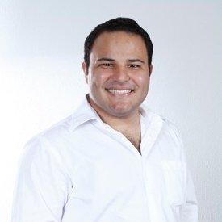

Paulo Ricardo Zambelli Taveira
Atualizado Abril/2020

32 anos, Brasileiro, Itajubá/MG
Formação:
Experiências Profissionais:
- Agente Local de Inovação (ALI) - Sebrae e CNPQ/MG
- Engenheiro de Campo - Schlumberger - Macaé/Rj;
- Engenheiro de Campo - Schlumberger - Kuwait;
- Estagiário de Engenharia Industrial - AEES Group - Itajubá/MG
Blogs de interesses:
Voltar para o início